8 Testing the flowtrend method
8.1 1d example
First, we’ll generate data.
set.seed(100)
dt <- gendat_1d(100, rep(100, 100), offset = 4)
dt_model <- gendat_1d(100, rep(100, 100), return_model = TRUE, offset=4)
ylist = dt %>% dt2ylist()
x = dt %>% pull(time) %>% unique()
plot_1d(ylist)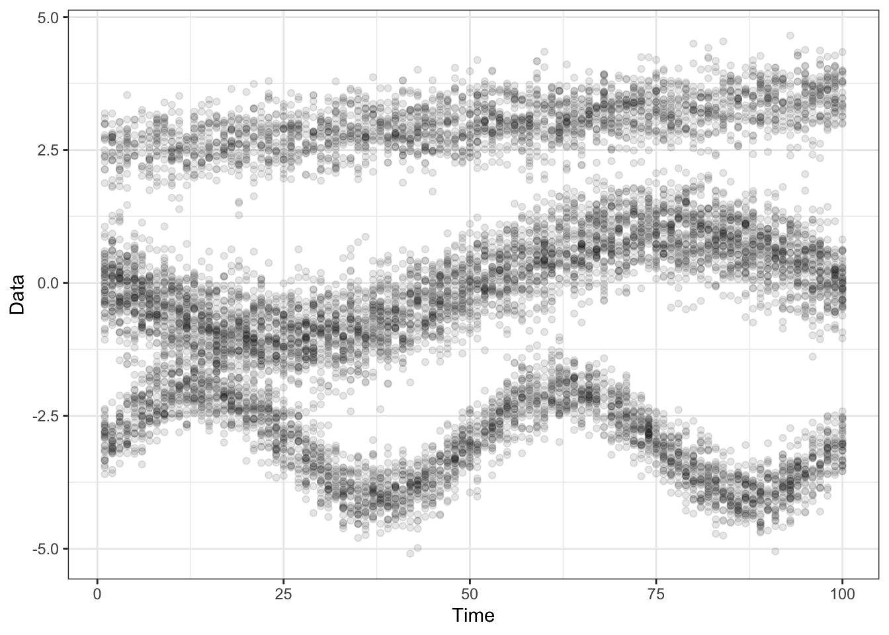
dt_model %>% select(time, cluster, prob) %>% ggplot() + geom_line(aes(x=time, y=prob, group=cluster, col = cluster))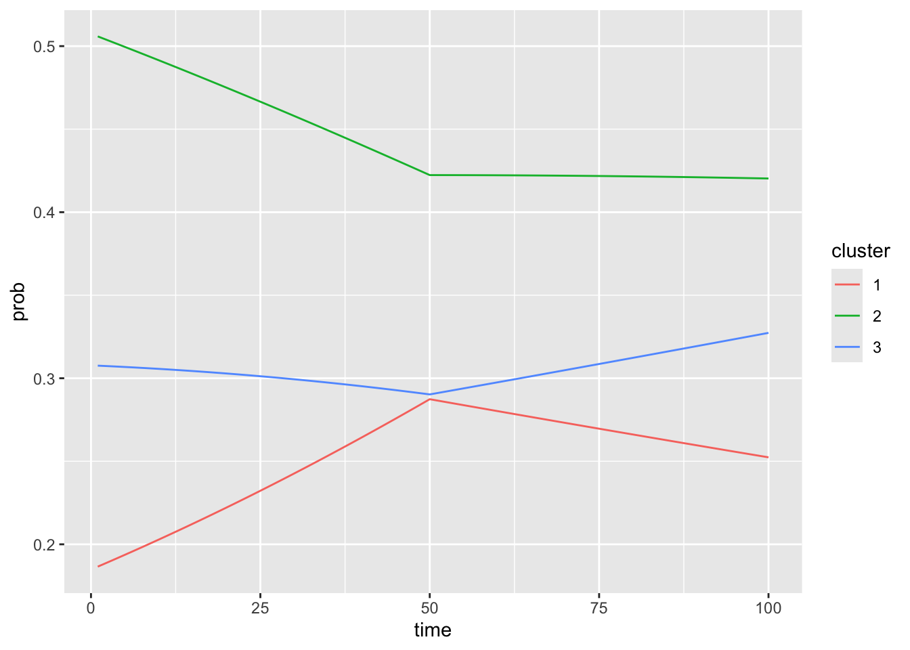
Next, we fit a model (with hand-picked lambda values).
set.seed(18)
obj <- flowtrend(ylist = ylist,
x = x,
maxdev = 1,
numclust = 3,
l = 2,
l_prob = 1,
lambda = .1,
lambda_prob = .1,
nrestart = 5)
## Also reorder the cluster labels of the truth, to match the fitted model.
ord = obj$mn[,1,] %>% colSums() %>% order(decreasing=TRUE)
lookup <- setNames(c(1:obj$numclust), ord)
dt_model$cluster = lookup[as.numeric(dt_model$cluster)] %>% as.factor()
## Reorder the cluster lables of the fitted model.
obj = reorder_clust(obj)The data and estimated model are shown here, along with the true means in dashed black lines.
plot_1d(ylist = ylist, obj = obj, x = x) +
geom_line(aes(x = time, y = mean, group = cluster),
data = dt_model,## %>% subset(time %ni% held_out),
linetype = "dashed", size=2, alpha = .7)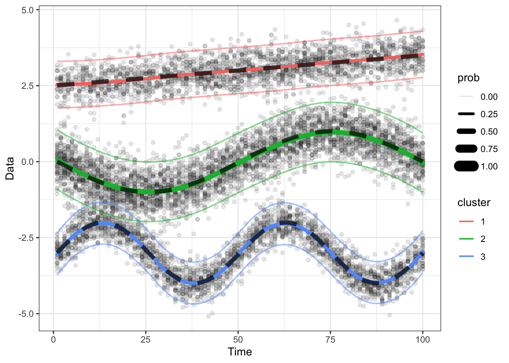
Also, the estimated probabilities are shown here.
plot_prob(obj=obj, x=x) +
geom_line(aes(x = time, y = prob, group = cluster, color = cluster),
data = dt_model, linetype = "dashed") +
facet_wrap(~cluster)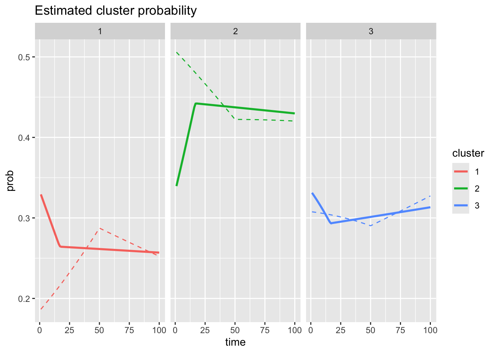
8.2 Testing monotonicity of objective values
The objective value (that is, the penalized log likelihood) should be monotone decreasing across EM algorithm iterations.
testthat::test_that("Objective value decreases over EM iterations.",{
glist = list()
for(iseed in 1:5){
## Generate synthetic data
set.seed(iseed*100)
dt <- gendat_1d(100, rep(10, 100))
dt_model <- gendat_1d(100, rep(10, 100), return_model = TRUE)
ylist = dt %>% dt2ylist()
x = dt %>% pull(time) %>% unique()
## Fit model
obj <- flowtrend_once(ylist = ylist,
x = x,
maxdev = 5,
numclust = 3,
lambda = 0.02,
l = 1,
l_prob = 2,
lambda_prob = 0.05)
## Test objective monotonicity
niter_end = length(obj$objective)
testthat::expect_true(all(diff(obj$objective) < 1E-3))
## Make a plot
g = ggplot(tibble(iter=1:niter_end, objective=obj$objectives)) +
geom_point(aes(x=iter, y=objective)) +
geom_line(aes(x=iter, y=objective)) +
ggtitle(paste0("Seed=", iseed*100)) +
xlab("EM iteration")
glist[[iseed]] = g
}
title = cowplot::ggdraw() + cowplot::draw_label("Objective values over EM iterations", fontface='bold')
main_plot = cowplot::plot_grid(plotlist = glist, ncol=5, nrow=1)
cowplot::plot_grid(title, main_plot, ncol=1, rel_heights=c(0.1, 1)) %>% print()
})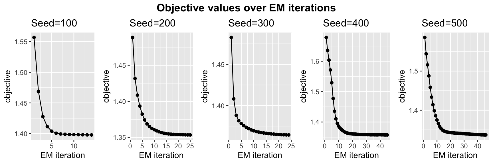
## Test passed 🎉8.3 2d example
Next, we try out flowtrend on a synthetic 2d data example.
set.seed(100)
TT = 100
dt <- gendat_2d(TT, rep(100, times = TT))
x = 1:TT
set.seed(10)
obj <- flowtrend(ylist = dt$ylist,
x = x,
maxdev = 3,
numclust = 3,
l = 2,
l_prob = 2,
lambda = 0.01,
lambda_prob = .01,
rho_init = 0.01, nrestart = 1)These are some snapshots at time \(t=10\) and \(t=20\).
plot_2d(dt$ylist, obj = obj, tt = 10, bin = FALSE) + coord_fixed() + ylim(-6, 3) + xlim(-6, 3)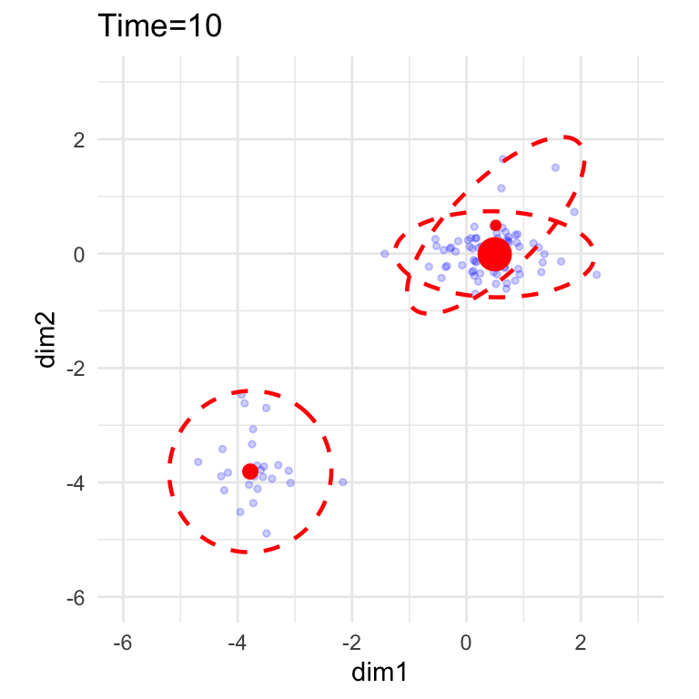
plot_2d(dt$ylist, obj = obj, tt = 20, bin = FALSE) + coord_fixed() + ylim(-6, 3) + xlim(-6, 3)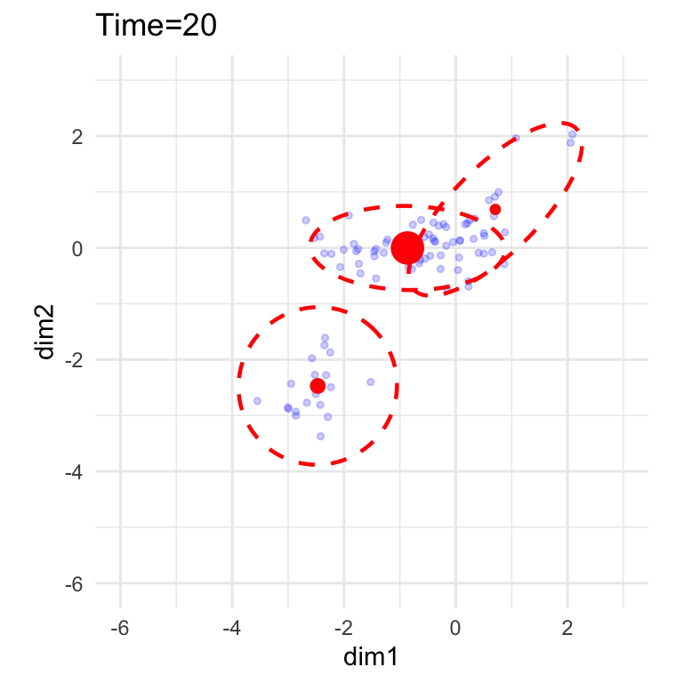
8.4 Working with “binned” dataset
Recall that “binning” means we will use binned frequency histogram estimates of the original particle-level dataset; this is useful when there are too many particles.
## library(flowmix)
set.seed(10232)
TT = 100
dt <- gendat_2d(TT, rep(100, times = TT))
manual_grid = flowmix::make_grid(dt$ylist, gridsize = 20)## Warning: replacing previous import 'RcppArmadillo::fastLmPure' by 'RcppEigen::fastLmPure' when loading 'flowmix'## Warning: replacing previous import 'RcppArmadillo::fastLm' by 'RcppEigen::fastLm' when loading 'flowmix'binres = flowmix::bin_many_cytograms(dt$ylist, manual.grid = manual_grid)
set.seed(100)
obj = flowtrend(ylist = binres$ybin_list,
countslist = binres$counts_list,
maxdev = 2,
numclust = 3,
l = 2,
l_prob = 2,
lambda = .01,
lambda_prob = .005,
rho_init = .01,
nrestart = 1)
plot_2d(ylist = binres$ybin_list,
countslist = binres$counts_list,
obj = obj, tt = 10, bin = TRUE) + coord_fixed()## Warning: Raster pixels are placed at uneven horizontal intervals and will be shifted
## ℹ Consider using `geom_tile()` instead.## Warning: Raster pixels are placed at uneven horizontal intervals and will be shifted
## ℹ Consider using `geom_tile()` instead.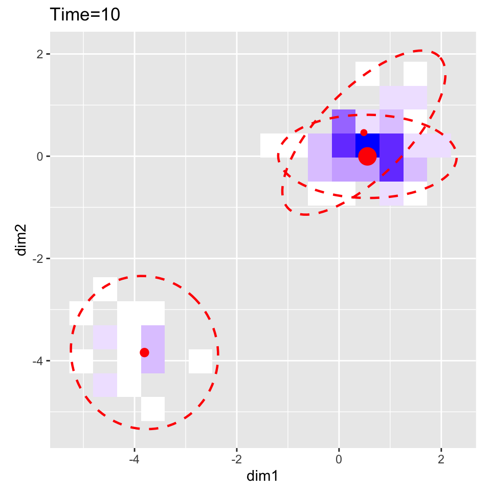
plot_2d(ylist = binres$ybin_list,
countslist = binres$counts_list,
obj = obj, tt = 100, bin = TRUE) + coord_fixed()## Warning: Raster pixels are placed at uneven horizontal intervals and will be shifted
## ℹ Consider using `geom_tile()` instead.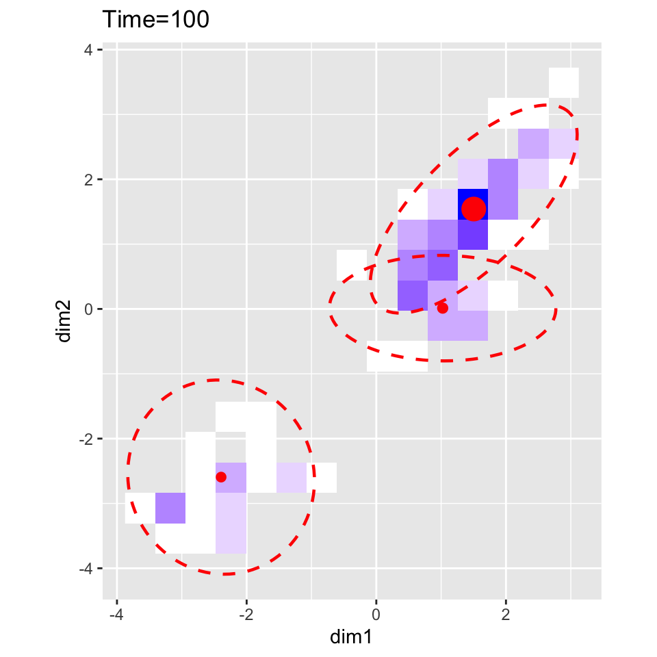
Also plot the cluster probabilities:
true_prob_long = dt$probs %>% as_tibble() %>% add_column(time = 1:TT) %>% pivot_longer(-time)
plot_prob(obj) +
geom_line(aes(x = time, y = value, group = name), data = true_prob_long, linetype = "dashed") +
ylim(c(0,1)) + ylab("")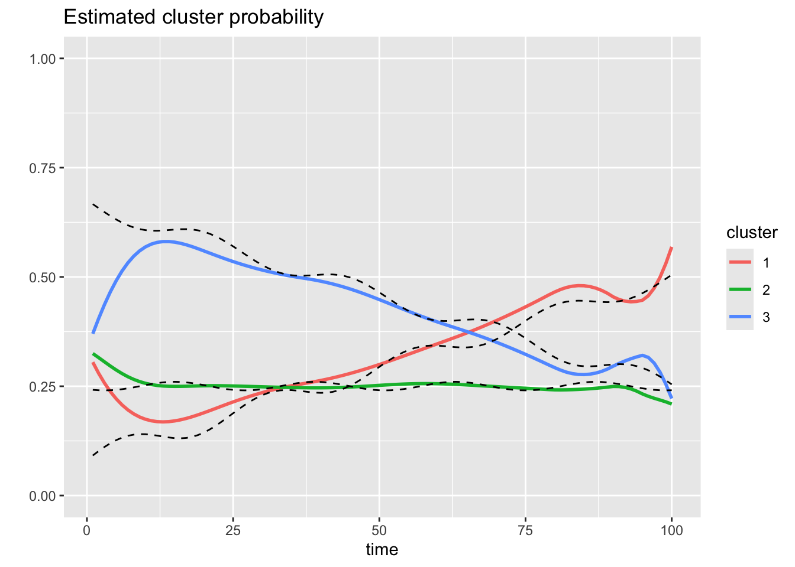
8.5 Unevenly spaced inputs (x)
Let’s try the EM algorithm out with unevenly spaced inputs.
set.seed(100)
dt <- gendat_1d(TT=100, rep(10, times=100))
dt_model <- gendat_1d(TT=100, rep(100, times=100), return_model = TRUE)
ylist_orig = dt %>% dt2ylist()
## Two ways of removing some time points
ind_rm_list = list(seq(from=10, to=100, by=10),
ind_rm = 30:50)
## Try both ways, and see that the objective values
objlist = list()
for(ii in 1:2){
ind_rm = ind_rm_list[[ii]]
x = (1:100)[-ind_rm]
ylist = ylist_orig[x]
set.seed(100)
obj <- flowtrend_once(ylist = ylist,
x = x,
maxdev = 100,
numclust = 3,
l = 2,
l_prob = 2,
lambda = 0.1,
lambda_prob = 0.1,
admm_local_adapt = TRUE,
rho_init = 0.01,
verbose = FALSE)
objlist[[ii]] = obj
}
## Plot both results (and objectives)
ii = 1
ind_rm = ind_rm_list[[ii]]
x = (1:100)[-ind_rm]
gg1 = plot_1d(obj = objlist[[1]], ylist = ylist_orig[x], x = x) +
ggtitle('Randomly missing time points')
all_objectives = objlist[[1]]$objectives
gg2 = data.frame(iter = 1:length(all_objectives), objectives = all_objectives) %>%
ggplot(aes(x = iter, y = objectives)) +
geom_point() + geom_line() + theme_minimal() +
ggtitle("EM objectives")
ii=2
ind_rm = ind_rm_list[[ii]]
x = (1:100)[-ind_rm]
gg3 = plot_1d(obj = objlist[[2]], ylist = ylist_orig[x], x = x) +
ggtitle('Chunks of missing time points')
all_objectives = objlist[[2]]$objectives
gg4 = data.frame(iter = 1:length(all_objectives), objectives = all_objectives) %>%
ggplot(aes(x = iter, y = objectives)) +
geom_point() + geom_line() + theme_minimal() +
ggtitle("EM objectives")
cowplot::plot_grid(gg1, gg2, gg3, gg4)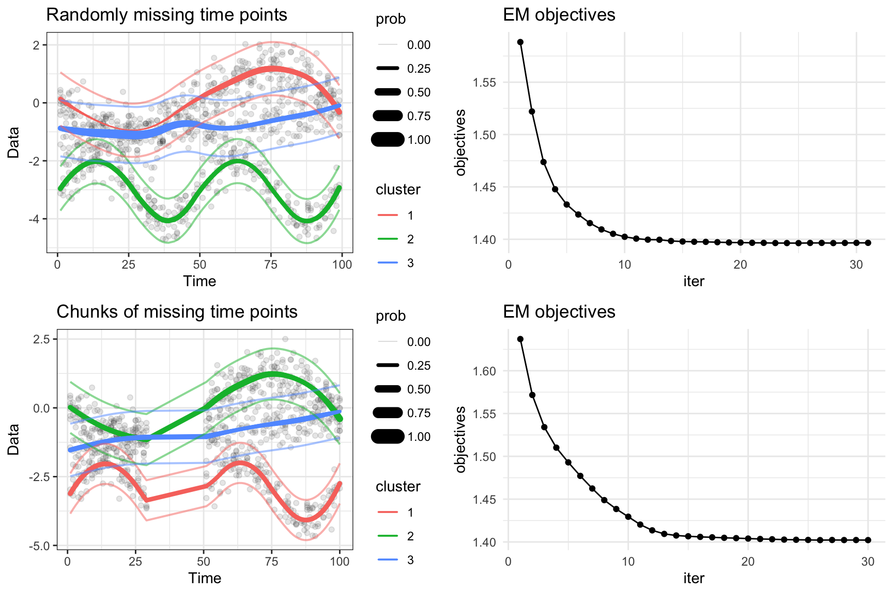
## %>% ggsave(filename = file.path("inst",
## "uneven-spaced-data-objectives.png"), width = 5, height = 3)(The dashed black lines are the truth, and the solid colored lines are the estimated means.)